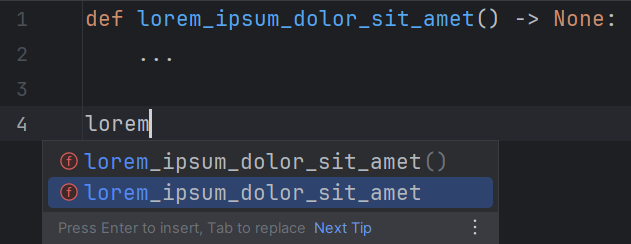
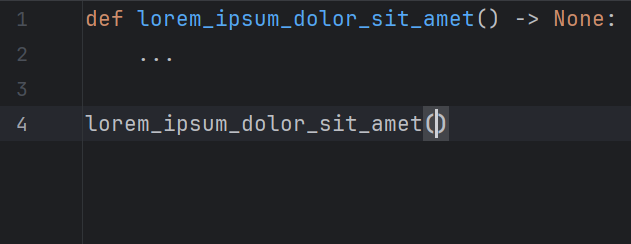
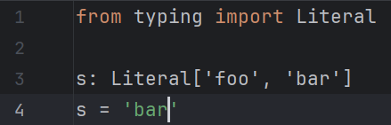
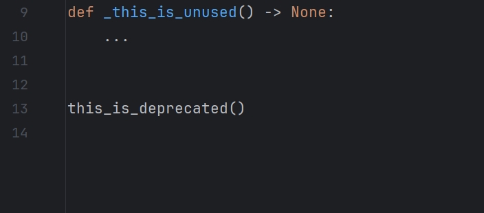

Configurations
Executable#
For the plugin to work, at least one executable file needs to be defined using either the Global or Project panel.
Such a file is typically named
pyright-langserver/pyright-python-langserver
and can likely be found in:
Note
The locations mentioned here are for Pip and NPM-like managers. For other tools (e.g. Homebrew), see their documentation to know where they store their executable files.
| Manager | Type | OS | Directory |
|---|---|---|---|
| NPM | Global | Windows | %APPDATA%\npm |
| NPM | Global | Linux | /usr/local/bin |
| Pip | Global | Windows | %LOCALAPPDATA%\Programs\Python\<version>\Scripts |
| Pip | Global | Linux | ~/.local/bin |
| NPM | Local | Windows | .\node_modules\.bin |
| NPM | Local | Linux | ./node_modules/.bin |
| Pip | Local | Windows | .\<your-venv>\Scripts |
| Pip | Local | Linux | ./<your-venv>/bin |
What's the difference between these files?
TLDR: Some may output "unexpected" things.
Note
For this plugin to work with a WSL project, its interpreter and the executable must be located within the same distribution.
If the executables can't be found in the aforementioned locations, see the following pages for more information:
- Where does npm install packages? - Stack Overflow
- Where does pip install its packages? - Stack Overflow
- folders - npm Docs
You can also use a relative path. It would be interpreted as relative to the project directory.
The executable is used as-is with no additional checks, so the plugin will still work even if, for example, it's a wrapper script that outputs diagnostics in the expected format.
Tip
For the best experience, always use or maintain compatibility with the latest version of Pyright.
UI hints#
As a path field is edited, the small hint under the field will show whether the path is valid or invalid.
This is only used to give a general hint; a path can still be saved even if it is marked as invalid.
Always use global#
Check this option to always use the global executable, even when the project also has an executable specified.
Default: false
Auto-suggest executable#
Check this option to automatically find and suggest an executable for the current project on open. See the corresponding feature for more information.
Default: true
Inspection entry#
This plugin can be disabled by disabling the inspection Pyright language server diagnostics, which can be found under Editor | Inspections. However, this is not recommended for other purposes than debugging.
Doing so would cause existing sessions to stop when the restart button is clicked, and new sessions would not be started.
Highlight severity levels#
Pyright diagnostics have three possible levels: Error, warning, and information. These can be mapped to different highlight severity levels in the IDE.
Note
The language server may also output "hint" diagnostics that report code as "unnecessary" or "deprecated". These can be disabled from the global configuration panel.
The target levels can be configured via the inspection's corresponding settings pane.
Only the levels defined in the dropdowns under the Options pane are honored.
For each diagnostic level, there are four highlight levels to choose from:
| Level | Default effects |
|---|---|
| Error | Red squiggles |
| Warning | Yellow squiggles |
| Weak warning | Dark yellow squiggles |
| Information | No visible effects |
These levels are semantical, not visual.
The Information level is the only one not considered "problematic" by the IDE. Annotations of this kind will not be reported as "problems" during batch inspections (File, Project Errors and similar tabs in the Problems tool window).
Note
Despite having no visible effects, Information annotations are still shown on hover.
Recommended levels#
| Diagnostic | For most users (default) | For lax users |
|---|---|---|
| Error | Error | Warning |
| Warning | Warning | Weak warning |
| Information | Weak warning | Weak warning |
Tooltips#
These options are not applied retroactively; you need to make an edit to see the effect.
Use editor font#
Check this option to display tooltips in the editor font.
Default: false

Add prefix#
Check this option to prefix tooltips with "Pyright:".
Default: false

Link error codes#
Enable this option to display error codes as links.
Default: false

Language server settings#
These settings are not applied retroactively; the server needs to be restarted for them to have effects.
Auto-restart server#
Check this option to automatically restart the language server on configuration change.
Highlight severity level settings will not trigger this behaviour.
Default: false
Note
The server might be restarted more than once if both configuration panels are modified.
Completion support#
Check this option to enable completion support.
Default: false

Note
The autocompletion result might be modified by the plugin depending on other configurations listed below.
Auto-import completions#
Uncheck this option to prevent the language server from offering
completions which, if accepted, will also add a import statement
for that newly introduced symbol.
This corresponds to the python.analysis.autoImportCompletions setting.
Default: true

Monkeypatch auto-import details#
Uncheck this option to prevent the original completion item detail ("Auto-import" or a similar localized message) from being overridden by its import source.
Default: true


Autocomplete parentheses#
Check this option to also automatically insert parentheses for function, method and constructor completions.
Default: false



Monkeypatch trailing quote bug#
Uncheck this option to use the IDE's native implementation when applying quoted completions, which may insert extraneous trailing quotes.
Upstream issue: IJPL-155741.
Default: true



Diagnostics support#
Uncheck this option to disable diagnostics support.
Default: true

Tagged hints#
Uncheck this option to prevent the language server from emitting "Unnecessary" and "Deprecated" hints, which are visualized in the IDE as faded-out and strikethrough text, correspondingly.
This corresponds to the pyright.disableTaggedHints setting.
Default: true


Hover support#
Uncheck this option to disable hover support.
Default: true

Go-to-definition support#
Check this option to enable go-to-definition support.
Default: false
Note
As of yet, PyCharm's native support is prioritized over the language server's.
This means Ctrl B (or similar shortcuts) will only trigger PyCharm's support on tokens it can handle (that is, most of them).
The difference between the set of all tokens which Pyright support and that of PyCharm is currently unknown.
See this issue for more information.
Log level#
Note
Language server logs are not recorded in idea.log by default.
You need to manually enable it.
Modify this option to make the language server emit more or less log messages.
This corresponds to the python.analysis.logLevel setting.
Default: Information
Locale#
Modify this option to make the language server emit messages in different languages.
This corresponds to the LC_ALL environment variable.
Default: Default (no value set)
Add common search paths#
Uncheck this option to tell the language server not to add
common search paths like src when there are
no execution environments defined in the configuration file.
This corresponds to the python.analysis.autoSearchPaths setting.
Default: true
Targeted file extensions#
A file whose extension is included in this list will be recognized as suitable for the language server to run on. This is useful if you use a server whose support range is wider than that of Pyright.
Each extension should be written on one line when the editor is expanded.
Otherwise, use the pipe character (|) to separate them.
Leading and trailing whitespace are stripped away. Blank extensions are thus considered invalid.
Default: py, pyi
Note
Presumably, due to a limitation/bug of IntelliJ, characters like "" (U+1F525 Fire, the extension for Mojo) cannot be serialized correctly into setting files and therefore will not persist between IDE sessions.
Testing shows that this affects characters whose codepoints are greater than U+FFFD.
Diagnostic mode#
Note
This option's usefulness is as of yet unknown.
Modify this option to control the number of files for which the language server will analyze and report diagnostics.
This corresponds to the python.analysis.diagnosticMode setting.
Default: Open files only
Workspace folders#
The folders defined by this option will be passed
to the language server as "workspace folders".
Pyright will only recognize pyproject.toml/pyrightconfig.json files
which are direct children of these folders.
Possible choices:
- Project base directories: Top-level directories which contain files related to the project, often only one (project root).
- Source roots: Directories marked as "source roots".
Default: Project base directories